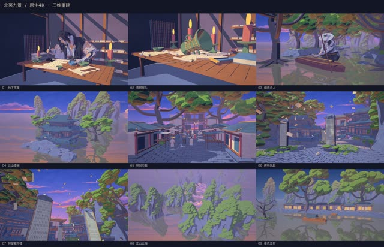
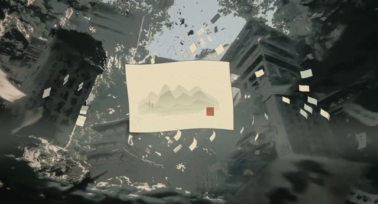
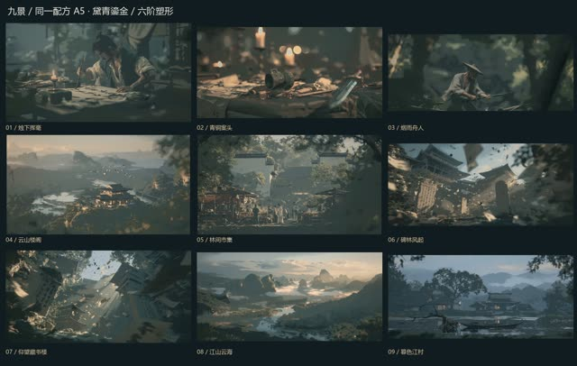
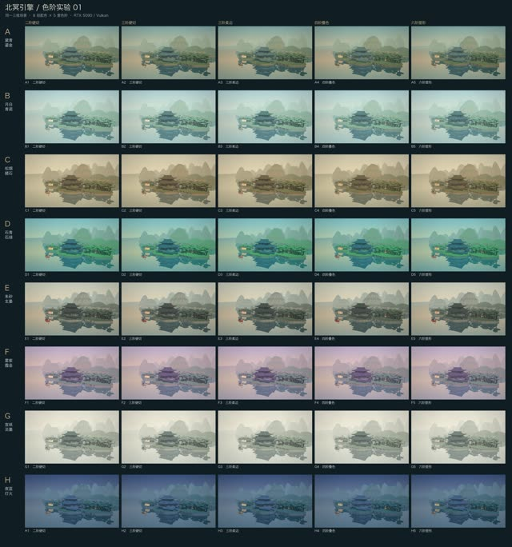
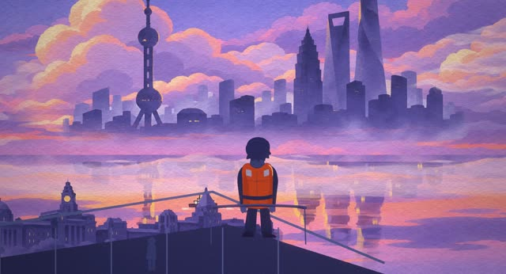
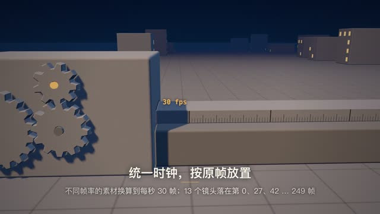
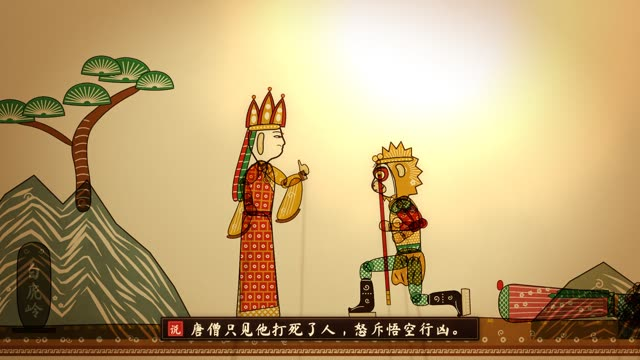
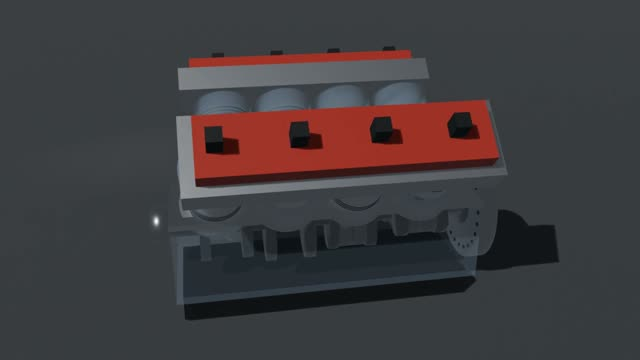

无预览画风实验案例馆
筛选、搜索、点开即播。视频是 Release 中的 960 像素观看副本，由历史成片转码，不是重新渲染；原始画质见各案例卡与 Release。
北冥画风实验 4
北冥引擎的色阶、九景与三维重建试验；画风实验不计为正式成片。

画面未获认可纸上江山｜北冥 E 组动画试作

无预览画风实验北冥 · 九景画风实验

无预览画风实验北冥引擎 · 色阶实验 01
PPT 故事介绍片 7
从幻灯片原画、分层、时间轴到代码镜头与混音的七部故事片。
 历史成片 · 未重渲
历史成片 · 未重渲日落之前
 历史成片 · 未重渲
历史成片 · 未重渲她的舞蹈导师
 历史成片 · 未重渲
历史成片 · 未重渲目之所及
 历史成片 · 未重渲
历史成片 · 未重渲见龙
 历史成片 · 未重渲
历史成片 · 未重渲这条街照常过年
 历史成片 · 未重渲
历史成片 · 未重渲画境追宝
 历史成片 · 未重渲
历史成片 · 未重渲懂你的人
发布会动画 7
上影发布会六条工程与一组共用资源。
 历史成片 · 未重渲
历史成片 · 未重渲方案 B《片库之夜》20 秒开头 · 导演阐述（TREATMENT）
 历史成片 · 未重渲
历史成片 · 未重渲方案 C《打开》20 秒开头
 历史成片 · 未重渲
历史成片 · 未重渲方案 C《打开》全片
 历史成片 · 未重渲
历史成片 · 未重渲片段一「开卷」TREATMENT
 历史成片 · 未重渲
历史成片 · 未重渲片段二「材料变奏」TREATMENT
 历史成片 · 未重渲
历史成片 · 未重渲片段三「燃比娃与揭晓」TREATMENT
北冥
无预览共用资源上影发布会共用资源
自研动画与预演 12
豹变四版、九分钟试作、机械动画、交互页面与技术预演。
历史成片 · 未重渲
AFTERGLOW 动画PV
画面未获认可
豹变四版

画面未获认可北冥九分钟
北冥
无预览交互 / 页面实验三维场记板
北冥
无预览技术预演列车动作预演
北冥
无预览交互 / 页面实验GSAP动效实验

历史成片 · 未重渲每一关都有证据

历史成片 · 未重渲三打白骨精
北冥
无预览技术预演公路动作预演
北冥
无预览交互 / 页面实验Three基础实验
北冥
无预览交互 / 页面实验Three人物实验

历史成片 · 未重渲V8引擎机械动画
纯代码风格基座 66
66 部代码风格实验：笔触、材质、排版与信息图的实现集合。
 历史成片 · 未重渲
历史成片 · 未重渲小纸船遇上大雨 · 处理方案（Treatment）
 历史成片 · 未重渲
历史成片 · 未重渲一滴颜料变锦鲤
 历史成片 · 未重渲
历史成片 · 未重渲鹤出留白 · 中国水墨风格样片（19.0 s）
 历史成片 · 未重渲
历史成片 · 未重渲红色自行车 · 油画厚涂风格样片（19.5 秒）
 历史成片 · 未重渲
历史成片 · 未重渲一根线的早晨
 历史成片 · 未重渲
历史成片 · 未重渲天为什么是蓝的 · 白板讲解风格样片 TREATMENT
 历史成片 · 未重渲
历史成片 · 未重渲渔夫还珠 · 皮影戏风格样片
 历史成片 · 未重渲
历史成片 · 未重渲一伞三景
 历史成片 · 未重渲
历史成片 · 未重渲鲤鱼跃龙门 · 红色窗花剪纸风格样片（19.5 s）
 历史成片 · 未重渲
历史成片 · 未重渲夜班火车回家 · 纸雕灯影风格样片 TREATMENT
 历史成片 · 未重渲
历史成片 · 未重渲跳水 · Risograph 孔版印刷 风格样片
 历史成片 · 未重渲
历史成片 · 未重渲消失的第十三页
 历史成片 · 未重渲
历史成片 · 未重渲灯塔守夜 · 木刻版画风格样片 TREATMENT
 历史成片 · 未重渲
历史成片 · 未重渲TEMPO · 节拍 —— 瑞士动态排版风格样片（19.75 秒）
 历史成片 · 未重渲
历史成片 · 未重渲零点密码 · 60s 间谍片头风格样片（TREATMENT）
 历史成片 · 未重渲
历史成片 · 未重渲《落成之夜》TREATMENT · 装饰艺术（Art Deco）风格样片
 历史成片 · 未重渲
历史成片 · 未重渲19 · 蓝图 / 工程制图 ——《擒纵机构》
 历史成片 · 未重渲
历史成片 · 未重渲浴火 · 彩色玻璃窗风格样片 TREATMENT
 历史成片 · 未重渲
历史成片 · 未重渲一天 · ONE DAY — 象形运动图形样片 Treatment
 历史成片 · 未重渲
历史成片 · 未重渲whale.exe —— 处理方案（ASCII / CRT 终端）
 历史成片 · 未重渲
历史成片 · 未重渲地球的一秒
 历史成片 · 未重渲
历史成片 · 未重渲一封信的旅程 · 等距信息图 风格样片 TREATMENT
 历史成片 · 未重渲
历史成片 · 未重渲Lumen · 暗色科技发布 风格样片 —— 导演阐述
 历史成片 · 未重渲
历史成片 · 未重渲闹钟起床号
 历史成片 · 未重渲
历史成片 · 未重渲追电车的夏天
 历史成片 · 未重渲
历史成片 · 未重渲《冷冻柜》 TREATMENT
宝箱怪
 历史成片 · 未重渲
历史成片 · 未重渲港口集市 · 风格样片 TREATMENT
 历史成片 · 未重渲
历史成片 · 未重渲四连关
 历史成片 · 未重渲
历史成片 · 未重渲节奏猜动物
 历史成片 · 未重渲
历史成片 · 未重渲《追帽子》TREATMENT · 1920s 默片
 历史成片 · 未重渲
历史成片 · 未重渲《交接录像》TREATMENT（后室 / 新怪谈 · 风格样片 36）
 历史成片 · 未重渲
历史成片 · 未重渲37 · 积木玩具《积木小屋变船》— 导演阐述
 历史成片 · 未重渲
历史成片 · 未重渲《纸龙》TREATMENT
 历史成片 · 未重渲
历史成片 · 未重渲港口一日
 历史成片 · 未重渲
历史成片 · 未重渲风车的一天
 历史成片 · 未重渲
历史成片 · 未重渲棱光 PRISM：处理方案
 历史成片 · 未重渲
历史成片 · 未重渲早餐铺开门 · 钢笔淡彩风格样片 TREATMENT
 历史成片 · 未重渲
历史成片 · 未重渲《逃跑的周报》处理方案（活体实机录屏 · 风格样片）
 历史成片 · 未重渲
历史成片 · 未重渲明日早晨
 历史成片 · 未重渲
历史成片 · 未重渲52 · 科幻全息界面《种子扫描》— 导演阐述
 历史成片 · 未重渲
历史成片 · 未重渲博物志·鹦鹉螺 · 铜版画风格样片 TREATMENT
 历史成片 · 未重渲
历史成片 · 未重渲岛屿之光 · 丝印旅行海报（风格样片 54）
 历史成片 · 未重渲
历史成片 · 未重渲后退的冰川
 历史成片 · 未重渲
历史成片 · 未重渲悬索桥为何不倒
 历史成片 · 未重渲
历史成片 · 未重渲火山口
 历史成片 · 未重渲
历史成片 · 未重渲涨潮一米
 历史成片 · 未重渲
历史成片 · 未重渲一年的雨 · 处理方案（Treatment）
 历史成片 · 未重渲
历史成片 · 未重渲按一下
 历史成片 · 未重渲
历史成片 · 未重渲一滴池塘水
 历史成片 · 未重渲
历史成片 · 未重渲十二秒 · 档案灯台（Archive Light Table）风格样片
 历史成片 · 未重渲
历史成片 · 未重渲会用工具的海獭
 历史成片 · 未重渲
历史成片 · 未重渲64 · 1920s 新闻影片 ·《空中竞速》TREATMENT
 历史成片 · 未重渲
历史成片 · 未重渲T−15 · 实时倒计时分屏 — 导演阐述
 历史成片 · 未重渲
历史成片 · 未重渲城市的一天
 历史成片 · 未重渲
历史成片 · 未重渲大桥的五十九分钟
 历史成片 · 未重渲
历史成片 · 未重渲《大坝》TREATMENT · 构成主义蒙太奇（kino-montage）
 历史成片 · 未重渲
历史成片 · 未重渲《那一脚》 TREATMENT — 体育战术板 Sports Telestrator
 历史成片 · 未重渲
历史成片 · 未重渲《本周天气》 · 电视新闻包装 风格样片（19.75 s）
 历史成片 · 未重渲
历史成片 · 未重渲冰淇淋车
 历史成片 · 未重渲
历史成片 · 未重渲十年 · TEN YEARS — 地铁线路图风格样片 TREATMENT
 历史成片 · 未重渲
历史成片 · 未重渲三个正方形 —— 黑板粉笔 · 风格样片 73
 历史成片 · 未重渲
历史成片 · 未重渲面包店的早晨
 历史成片 · 未重渲
历史成片 · 未重渲雪夜小站 · 印刷长镜头 风格样片 TREATMENT
 历史成片 · 未重渲
历史成片 · 未重渲《叮咚》TREATMENT · 电路板风格样片
 历史成片 · 未重渲
历史成片 · 未重渲